第 16 章
轮廓拟合与凸包的相关应用
本章共 3 个小节 · 轮廓拟合 · 凸包 · 凸缺陷 · 几何测试
本章是轮廓知识的延伸。前一章取得轮廓后，可以进一步用矩形、圆形、椭圆、三角形、多边形或直线描述轮廓外形；
也可以计算凸包、凸缺陷，并测试轮廓是否为凸形或某点到轮廓的距离。
共用
本章多数程序都先读取影像、转灰阶、二值化，再用 findContours() 找轮廓，后续才进行拟合或测试。
src = cv2.imread("image.jpg")
src_gray = cv2.cvtColor(src, cv2.COLOR_BGR2GRAY)
ret, dst_binary = cv2.threshold(src_gray, 127, 255, cv2.THRESH_BINARY)
contours, hierarchy = cv2.findContours(
dst_binary,
cv2.RETR_LIST,
cv2.CHAIN_APPROX_SIMPLE
)
16-1
轮廓的拟合
轮廓拟合是将凹凸不平整的轮廓用几何图形或多边形框起来。本节依序介绍矩形包围、最小包围矩形、
最小包围圆形、最佳拟合椭圆、最小包围三角形、近似多边形与最佳拟合直线。
16-1-1 矩形包围
boundingRect() 可取得包围轮廓的矩形。此矩形不旋转，边缘与 x、y 轴平行。
retval = cv2.boundingRect(array)
| 参数 / 返回值 | 说明 |
|---|
retval | 返回 (x, y, w, h)，分别是左上角 x、y 坐标，以及矩形宽度与高度。 |
array | 灰阶影像或轮廓。 |
程序实例 ch16_1.py：列出包围轮廓的矩形框坐标、宽度和高度
# ch16_1.py
import cv2
src = cv2.imread("explode1.jpg")
cv2.imshow("src", src)
src_gray = cv2.cvtColor(src, cv2.COLOR_BGR2GRAY)
ret, dst_binary = cv2.threshold(src_gray, 127, 255, cv2.THRESH_BINARY)
contours, hierarchy = cv2.findContours(
dst_binary,
cv2.RETR_LIST,
cv2.CHAIN_APPROX_SIMPLE
)
rect = cv2.boundingRect(contours[0])
print(f"矩形 rect = {rect}")
x, y, w, h = cv2.boundingRect(contours[0])
print(f"左上角 x = {x}, 左上角 y = {y}")
print(f"矩形宽度 = {w}")
print(f"矩形高度 = {h}")
cv2.waitKey(0)
cv2.destroyAllWindows()
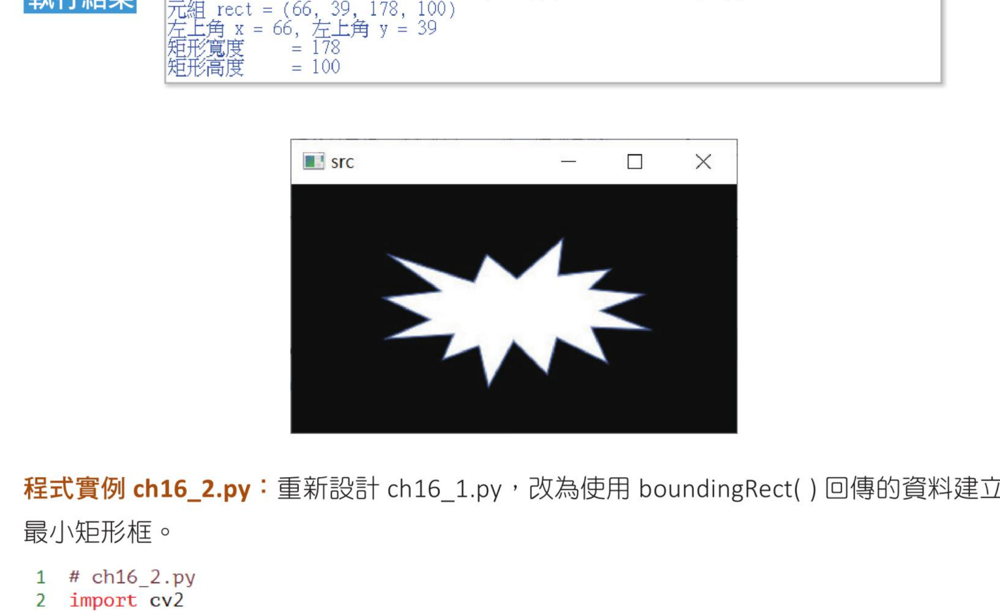
读取 explode1.jpg 后列出矩形包围坐标，参考原书第 16-2 页。
程序实例 ch16_2.py / ch16_3.py：用 boundingRect() 的返回值绘制矩形框
# ch16_2.py
x, y, w, h = cv2.boundingRect(contours[0])
dst = cv2.rectangle(src, (x, y), (x + w, y + h), (0, 255, 255), 2)
cv2.imshow("dst", dst)
# ch16_3.py
# 将 ch16_2.py 的来源影像改为 explode2.jpg，观察矩形面积变大的情况。
src = cv2.imread("explode2.jpg")
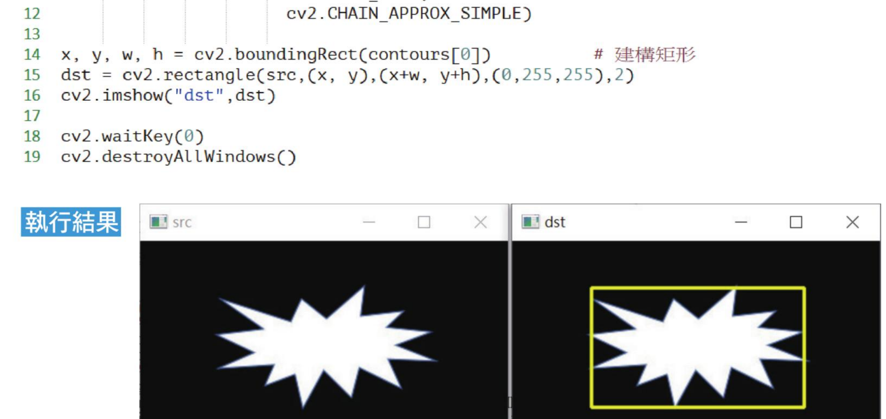
轴对齐矩形可以包住轮廓，但不一定是面积最小的包围矩形，参考原书第 16-3 至 16-4 页。
16-1-2 最小包围矩形
minAreaRect() 会返回可旋转的最小包围矩形。由于返回的是中心、宽高与旋转角度，
还需要用 boxPoints() 取得四个顶点坐标，再用 drawContours() 画出来。
retval = cv2.minAreaRect(points)
points = cv2.boxPoints(box)
程序实例 ch16_4.py：使用最小矩形框包围 explode2.jpg 的轮廓
# ch16_4.py
import cv2
import numpy as np
src = cv2.imread("explode2.jpg")
cv2.imshow("src", src)
src_gray = cv2.cvtColor(src, cv2.COLOR_BGR2GRAY)
ret, dst_binary = cv2.threshold(src_gray, 127, 255, cv2.THRESH_BINARY)
contours, hierarchy = cv2.findContours(
dst_binary,
cv2.RETR_LIST,
cv2.CHAIN_APPROX_SIMPLE
)
box = cv2.minAreaRect(contours[0])
print(f"转换前的矩形顶角 = \n{box}")
points = cv2.boxPoints(box)
points = np.int0(points)
print(f"转换后的矩形顶角 = \n{points}")
dst = cv2.drawContours(src, [points], 0, (0, 255, 0), 2)
cv2.imshow("dst", dst)
cv2.waitKey(0)
cv2.destroyAllWindows()
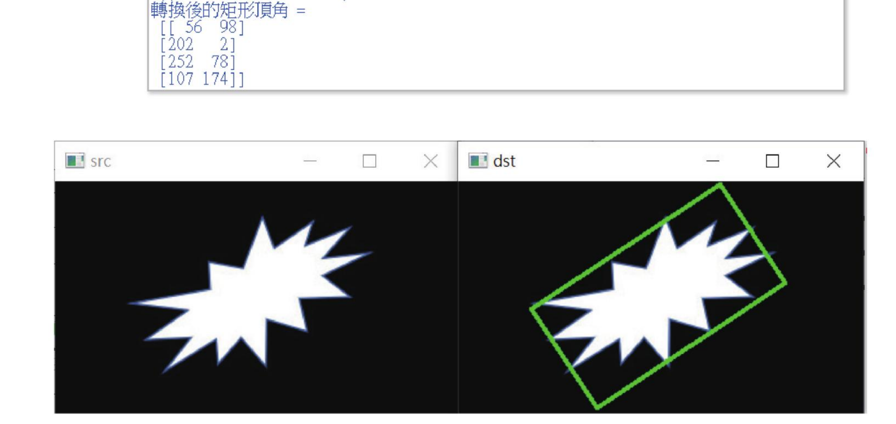
旋转后的矩形更贴合轮廓，参考原书第 16-5 页。
16-1-3 最小包围圆形
minEnclosingCircle() 会取得包住轮廓的最小圆形，返回圆心坐标与半径。
center, radius = cv2.minEnclosingCircle(points)
程序实例 ch16_5.py / ch16_6.py：用最小圆包围轮廓
# ch16_5.py
import cv2
import numpy as np
src = cv2.imread("explode3.jpg")
cv2.imshow("src", src)
src_gray = cv2.cvtColor(src, cv2.COLOR_BGR2GRAY)
ret, dst_binary = cv2.threshold(src_gray, 127, 255, cv2.THRESH_BINARY)
contours, hierarchy = cv2.findContours(
dst_binary,
cv2.RETR_LIST,
cv2.CHAIN_APPROX_SIMPLE
)
(x, y), radius = cv2.minEnclosingCircle(contours[0])
center = (int(x), int(y))
radius = int(radius)
dst = cv2.circle(src, center, radius, (0, 255, 255), 2)
cv2.imshow("dst", dst)
# ch16_6.py
# 将来源影像改为 explode1.jpg，观察不同轮廓的圆形包围结果。
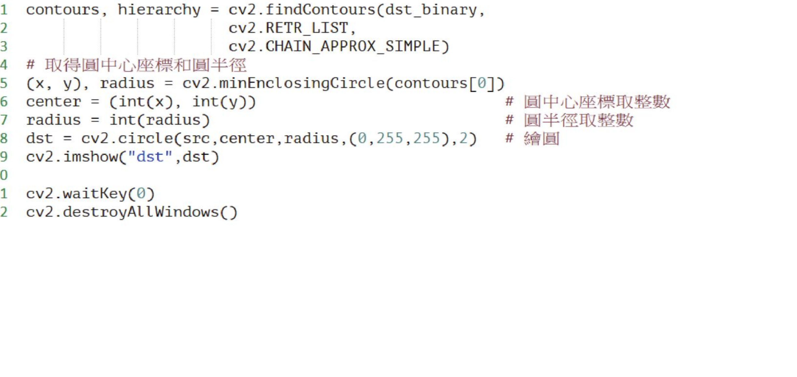
圆心与半径取整后，可用 circle() 绘制包围圆，参考原书第 16-6 至 16-7 页。
16-1-4 最佳拟合椭圆
fitEllipse() 会以轮廓点拟合椭圆，返回值可直接传入 ellipse() 绘制。
retval = cv2.fitEllipse(points)
程序实例 ch16_7.py：使用 fitEllipse() 包围云朵轮廓
# ch16_7.py
import cv2
src = cv2.imread("cloud.jpg")
cv2.imshow("src", src)
src_gray = cv2.cvtColor(src, cv2.COLOR_BGR2GRAY)
ret, dst_binary = cv2.threshold(src_gray, 127, 255, cv2.THRESH_BINARY)
contours, hierarchy = cv2.findContours(
dst_binary,
cv2.RETR_LIST,
cv2.CHAIN_APPROX_SIMPLE
)
ellipse = cv2.fitEllipse(contours[0])
print(f"资料类型 = {type(ellipse)}")
print(f"椭圆中心 = {ellipse[0]}")
print(f"椭圆轴长 = {ellipse[1]}")
print(f"旋转角度 = {ellipse[2]}")
dst = cv2.ellipse(src, ellipse, (0, 255, 0), 2)
cv2.imshow("dst", dst)
cv2.waitKey(0)
cv2.destroyAllWindows()
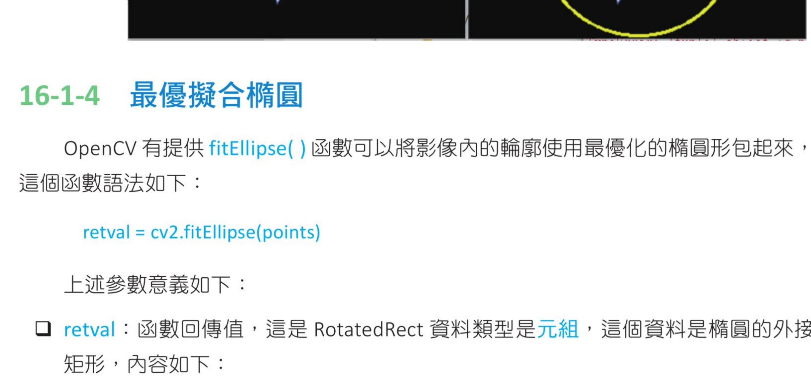
fitEllipse() 返回的资料可直接用于绘制椭圆，参考原书第 16-8 页。
16-1-5 最小包围三角形
minEnclosingTriangle() 会返回三角形面积与顶点坐标。书中范例直接用三次 line()
连接三角形三个顶点，习题要求改用 for 循环完成。
area, triangle = cv2.minEnclosingTriangle(points)
程序实例 ch16_8.py：用最小三角形包围 heart.jpg
# ch16_8.py
import cv2
import numpy as np
src = cv2.imread("heart.jpg")
cv2.imshow("src", src)
src_gray = cv2.cvtColor(src, cv2.COLOR_BGR2GRAY)
ret, dst_binary = cv2.threshold(src_gray, 127, 255, cv2.THRESH_BINARY)
contours, hierarchy = cv2.findContours(
dst_binary,
cv2.RETR_LIST,
cv2.CHAIN_APPROX_SIMPLE
)
area, triangle = cv2.minEnclosingTriangle(contours[0])
triangle = np.int0(triangle)
print(f"三角形面积 = {area}")
print(f"三角形顶点坐标资料类型 = {type(triangle)}")
print(f"三角形顶点坐标 = \n{triangle}")
dst = cv2.line(src, tuple(triangle[0][0]), tuple(triangle[1][0]), (0, 255, 0), 2)
dst = cv2.line(src, tuple(triangle[1][0]), tuple(triangle[2][0]), (0, 255, 0), 2)
dst = cv2.line(src, tuple(triangle[0][0]), tuple(triangle[2][0]), (0, 255, 0), 2)
cv2.imshow("dst", dst)
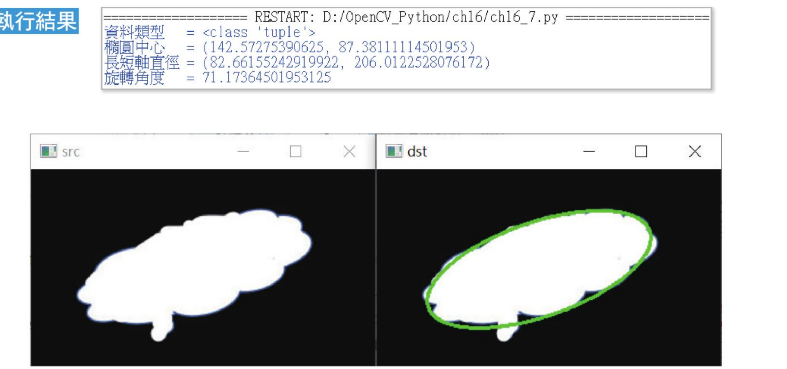
三角形三个顶点可由返回数组取得，参考原书第 16-10 页。
16-1-6 近似多边形
approxPolyDP() 可使用多边形近似轮廓。epsilon 是原始轮廓与近似多边形之间的最大距离，
数值越大，近似越粗略，顶点通常越少。
approx = cv2.approxPolyDP(curve, epsilon, closed)
程序实例 ch16_9.py：比较 epsilon=3 与 epsilon=15
# ch16_9.py
import cv2
src = cv2.imread("multiple.jpg")
cv2.imshow("src", src)
src_gray = cv2.cvtColor(src, cv2.COLOR_BGR2GRAY)
ret, dst_binary = cv2.threshold(src_gray, 127, 255, cv2.THRESH_BINARY)
contours, hierarchy = cv2.findContours(
dst_binary,
cv2.RETR_LIST,
cv2.CHAIN_APPROX_SIMPLE
)
src1 = src.copy()
src2 = src.copy()
n = len(contours)
for i in range(n):
approx = cv2.approxPolyDP(contours[i], 3, True)
dst1 = cv2.polylines(src1, [approx], True, (0, 255, 0), 2)
approx = cv2.approxPolyDP(contours[i], 15, True)
dst2 = cv2.polylines(src2, [approx], True, (0, 255, 0), 2)
cv2.imshow("dst1 - epsilon=3", dst1)
cv2.imshow("dst2 - epsilon=15", dst2)
cv2.waitKey(0)
cv2.destroyAllWindows()
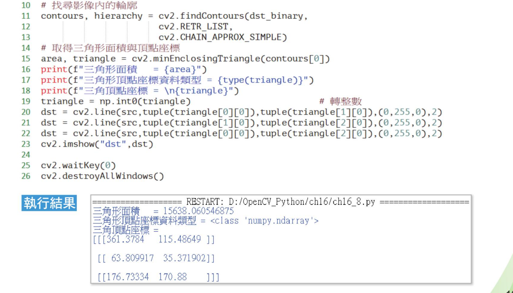
下列图分别是原始影像、epsilon=3 与 epsilon=15 的近似多边形，参考原书第 16-11 页。
16-1-7.1 最佳拟合直线
fitLine() 会使用轮廓点拟合直线，并返回正则化向量与直线经过的点。书中范例使用 DIST_L2
距离类型，再计算左边点与右边点来绘制直线。
line = cv2.fitLine(points, distType, param, reps, aeps)
程序实例 ch16_10.py：使用 fitLine() 表达不规则轮廓
# ch16_10.py
import cv2
src = cv2.imread("unregular.jpg")
cv2.imshow("src", src)
src_gray = cv2.cvtColor(src, cv2.COLOR_BGR2GRAY)
ret, dst_binary = cv2.threshold(src_gray, 127, 255, cv2.THRESH_BINARY)
contours, hierarchy = cv2.findContours(
dst_binary,
cv2.RETR_LIST,
cv2.CHAIN_APPROX_SIMPLE
)
rows, cols = src.shape[:2]
vx, vy, x, y = cv2.fitLine(contours[0], cv2.DIST_L2, 0, 0.01, 0.01)
print(f"直线正规化向量 = ({vx}, {vy})")
print(f"直线经过的点 = ({x}, {y})")
lefty = int((-x * vy / vx) + y)
righty = int(((cols - x) * vy / vx) + y)
dst = cv2.line(src, (0, lefty), (cols - 1, righty), (0, 255, 0), 2)
cv2.imshow("dst", dst)
cv2.waitKey(0)
cv2.destroyAllWindows()
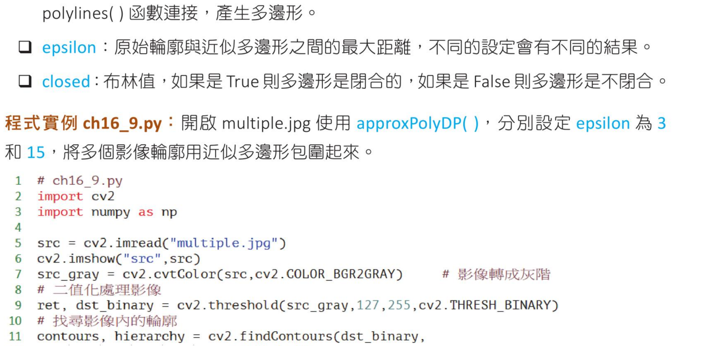
用轮廓点拟合出代表直线，参考原书第 16-14 页。
16-2
凸包
16-2-1 获得凸包
凸包是包住轮廓的最小凸多边形。convexHull() 可返回凸包顶点坐标，也可返回轮廓中对应点的索引；
后者在计算凸缺陷时会用到。
hull = cv2.convexHull(points, clockwise, returnPoints)
| 参数 | 说明 |
|---|
points | 输入轮廓。 |
clockwise | 可选参数，决定凸包点顺时针或逆时针排列。 |
returnPoints | 默认 True，返回凸包点坐标；设为 False 时返回轮廓点索引。 |
程序实例 ch16_11.py：使用 heart1.jpg 建立凸包
# ch16_11.py
import cv2
src = cv2.imread("heart1.jpg")
cv2.imshow("src", src)
src_gray = cv2.cvtColor(src, cv2.COLOR_BGR2GRAY)
ret, dst_binary = cv2.threshold(src_gray, 127, 255, cv2.THRESH_BINARY)
contours, hierarchy = cv2.findContours(
dst_binary,
cv2.RETR_LIST,
cv2.CHAIN_APPROX_SIMPLE
)
hull = cv2.convexHull(contours[0])
dst = cv2.polylines(src, [hull], True, (0, 255, 0), 2)
cv2.imshow("dst", dst)
cv2.waitKey(0)
cv2.destroyAllWindows()
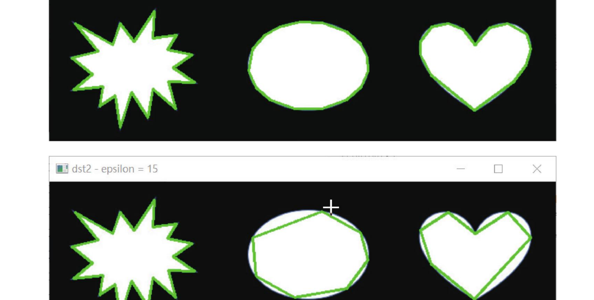
凸包连线会补齐心形上方的凹陷区域，参考原书第 16-16 页。
程序实例 ch16_12.py / ch16_12_1.py / ch16_13.py：手势凸包与面积
# ch16_12.py
src = cv2.imread("hand1.jpg")
hull = cv2.convexHull(contours[0])
dst = cv2.polylines(src, [hull], True, (0, 255, 0), 2)
# ch16_12_1.py
convex_area = cv2.contourArea(hull)
print(f"凸包面积 = {convex_area}")
# ch16_13.py
src = cv2.imread("hand2.jpg")
n = len(contours)
for i in range(n):
hull = cv2.convexHull(contours[i])
dst = cv2.polylines(src, [hull], True, (0, 255, 0), 2)
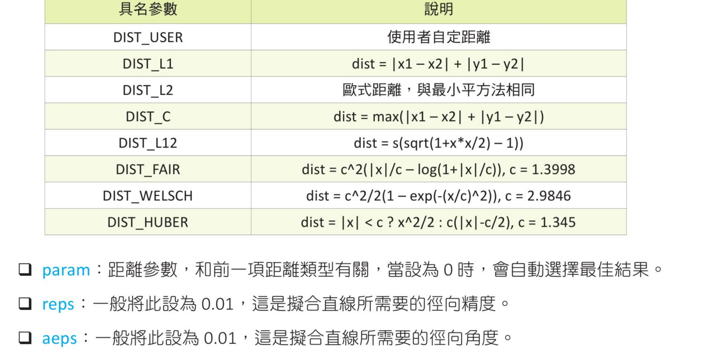
将凸包应用在单一手势轮廓，参考原书第 16-17 页。
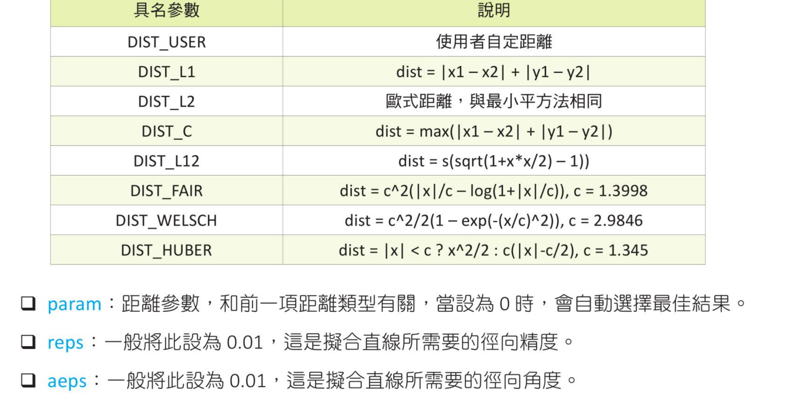
contourArea() 可计算凸包面积，参考原书第 16-18 页。
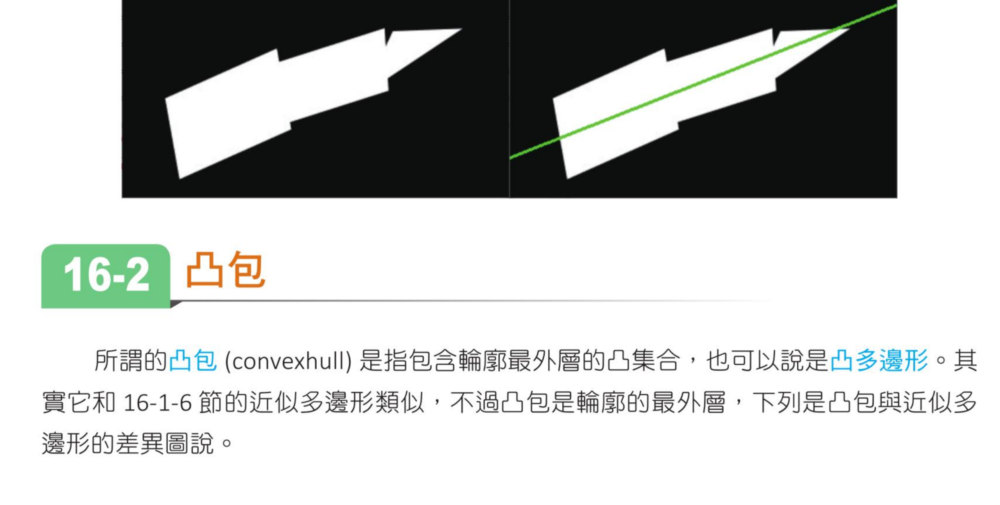
多轮廓影像可用循环逐一计算凸包，参考原书第 16-19 页。
16-2-2 凸缺陷
凸缺陷是轮廓与凸包之间的凹陷区域。使用 convexityDefects() 前，必须让
convexHull() 回传凸包索引，也就是设定 returnPoints=False。
convexityDefects = cv2.convexityDefects(contour, convexhull)
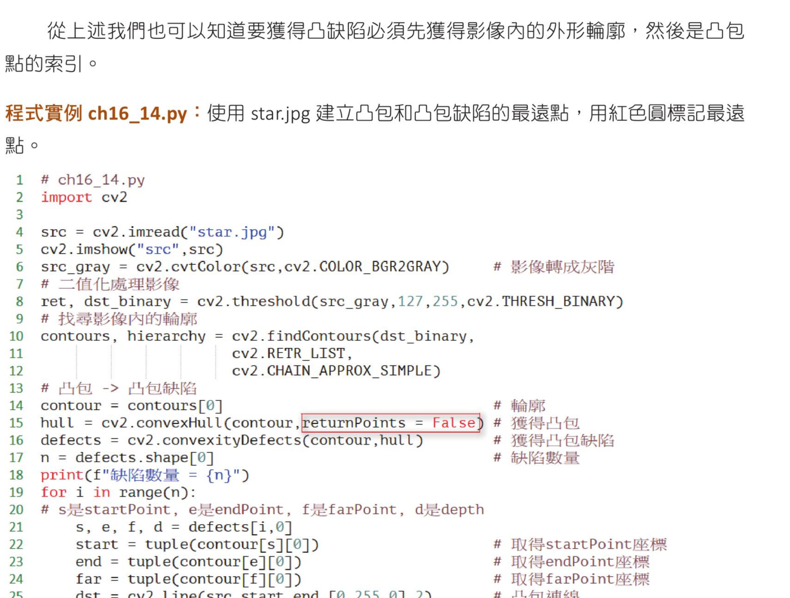
凸缺陷会记录起点、终点、最远点与距离，参考原书第 16-20 页。
程序实例 ch16_14.py：使用 star.jpg 建立凸包和凸缺陷最远点
# ch16_14.py
import cv2
src = cv2.imread("star.jpg")
cv2.imshow("src", src)
src_gray = cv2.cvtColor(src, cv2.COLOR_BGR2GRAY)
ret, dst_binary = cv2.threshold(src_gray, 127, 255, cv2.THRESH_BINARY)
contours, hierarchy = cv2.findContours(
dst_binary,
cv2.RETR_LIST,
cv2.CHAIN_APPROX_SIMPLE
)
contour = contours[0]
hull = cv2.convexHull(contour, returnPoints=False)
defects = cv2.convexityDefects(contour, hull)
n = defects.shape[0]
for i in range(n):
s, e, f, d = defects[i, 0]
start = tuple(contour[s][0])
end = tuple(contour[e][0])
far = tuple(contour[f][0])
dst = cv2.line(src, start, end, (0, 255, 0), 2)
dst = cv2.circle(src, far, 3, (0, 0, 255), -1)
cv2.imshow("dst", dst)
cv2.waitKey(0)
cv2.destroyAllWindows()
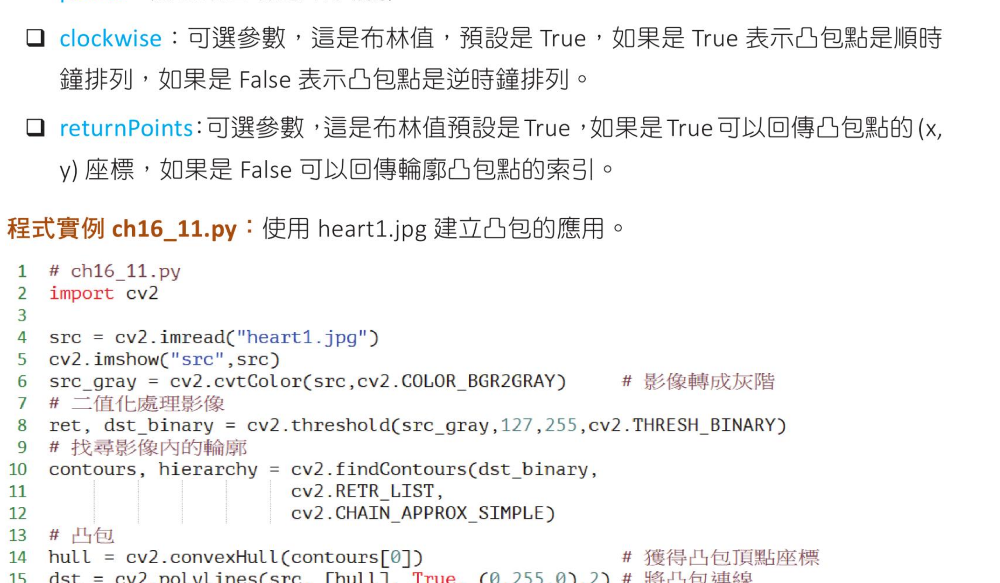
红点标示凸缺陷的 far point，参考原书第 16-21 页。
16-3
轮廓的几何测试
16-3-1 测试轮廓包围线是否凸形
isContourConvex() 可测试轮廓是否为凸形，返回 True 或 False。
书中范例分别测试凸包与近似多边形。
retval = cv2.isContourConvex(contour)
程序实例 ch16_15.py：测试凸包与近似多边形是否凸形
# ch16_15.py
import cv2
src = cv2.imread("heart1.jpg")
cv2.imshow("src", src)
src_gray = cv2.cvtColor(src, cv2.COLOR_BGR2GRAY)
ret, dst_binary = cv2.threshold(src_gray, 127, 255, cv2.THRESH_BINARY)
contours, hierarchy = cv2.findContours(
dst_binary,
cv2.RETR_LIST,
cv2.CHAIN_APPROX_SIMPLE
)
src1 = src.copy()
hull = cv2.convexHull(contours[0])
dst1 = cv2.polylines(src1, [hull], True, (0, 255, 0), 2)
cv2.imshow("dst1", dst1)
isConvex = cv2.isContourConvex(hull)
print(f"凸包是凸形 = {isConvex}")
src2 = src.copy()
approx = cv2.approxPolyDP(contours[0], 10, True)
dst2 = cv2.polylines(src2, [approx], True, (0, 255, 0), 2)
cv2.imshow("dst2 - epsilon=10", dst2)
isConvex = cv2.isContourConvex(approx)
print(f"近似多边形是凸形 = {isConvex}")
凸包是凸形 = True
近似多边形是凸形 = False
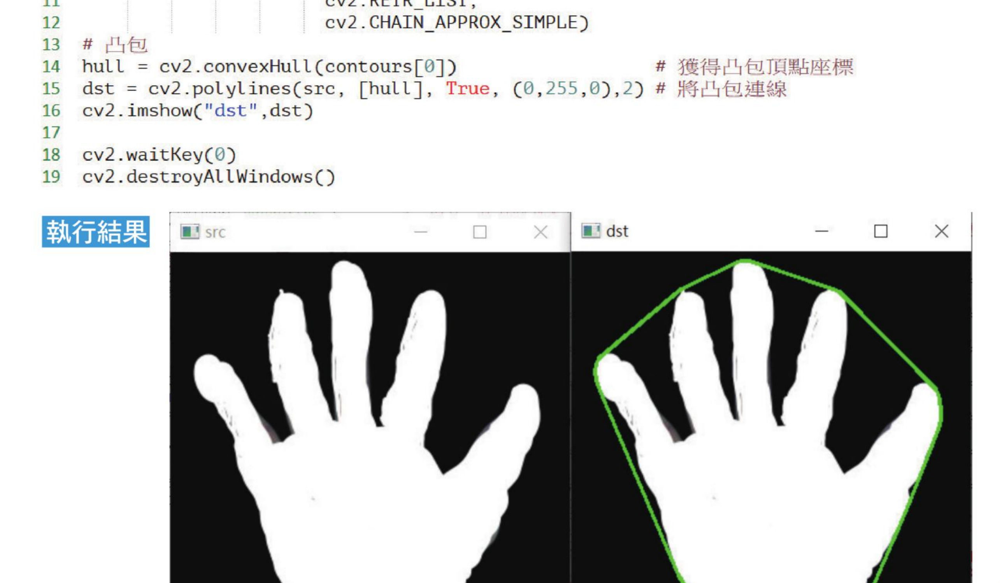
凸包是凸形，近似多边形不一定是凸形，参考原书第 16-22 页。
16-3-2 计算任意坐标点与轮廓包围线的最短距离
pointPolygonTest() 可测试任一点与轮廓的关系。若 measureDist=True，
返回实际带正负号的距离；点在轮廓外为负，在轮廓上为 0，在轮廓内为正。
若 measureDist=False，只返回 -1、0 或 1。
retval = cv2.pointPolygonTest(contour, pt, measureDist)
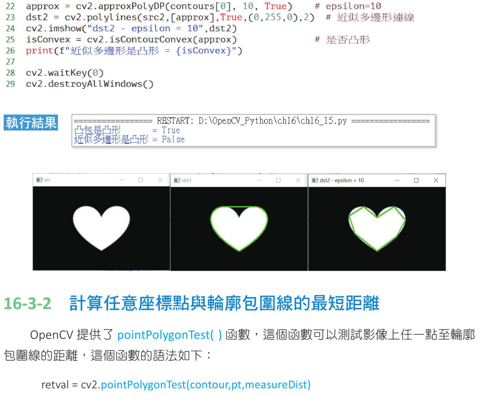
A 在轮廓边界，B 在轮廓内，C 在轮廓外，参考原书第 16-23 页。
程序实例 ch16_16.py：measureDist=True，计算点到凸包边界的距离
# ch16_16.py
import cv2
src = cv2.imread("heart1.jpg")
cv2.imshow("src", src)
src_gray = cv2.cvtColor(src, cv2.COLOR_BGR2GRAY)
ret, dst_binary = cv2.threshold(src_gray, 127, 255, cv2.THRESH_BINARY)
contours, hierarchy = cv2.findContours(
dst_binary,
cv2.RETR_LIST,
cv2.CHAIN_APPROX_SIMPLE
)
hull = cv2.convexHull(contours[0])
dst = cv2.polylines(src, [hull], True, (0, 255, 0), 2)
point_a = (231, 85)
dist_a = cv2.pointPolygonTest(hull, point_a, True)
dst = cv2.circle(src, point_a, 3, (0, 0, 255), -1)
cv2.putText(dst, "A", (236, 95), cv2.FONT_HERSHEY_SIMPLEX, 1, (0, 255, 255), 2)
print(f"dist_a = {dist_a}")
point_b = (150, 100)
dist_b = cv2.pointPolygonTest(hull, point_b, True)
dst = cv2.circle(src, point_b, 3, (0, 0, 255), -1)
cv2.putText(dst, "B", (160, 110), cv2.FONT_HERSHEY_SIMPLEX, 1, (255, 0, 0), 2)
print(f"dist_b = {dist_b}")
point_c = (80, 85)
dist_c = cv2.pointPolygonTest(hull, point_c, True)
dst = cv2.circle(src, point_c, 3, (0, 0, 255), -1)
cv2.putText(dst, "C", (50, 95), cv2.FONT_HERSHEY_SIMPLEX, 1, (0, 255, 255), 2)
print(f"dist_c = {dist_c}")
cv2.imshow("dst", dst)
dist_a = 0.0
dist_b = 35.65165808180456
dist_c = -16.829141392230833
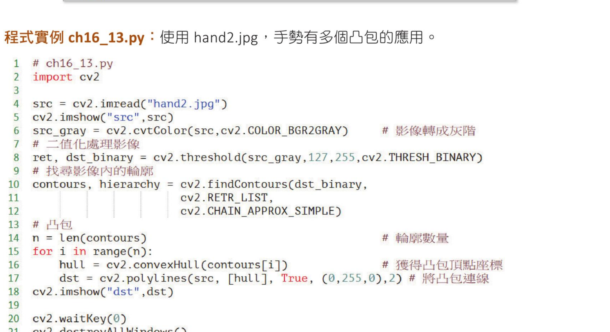
返回实际距离，正负号表示点在轮廓内外，参考原书第 16-23 页。
程序实例 ch16_17.py：measureDist=False，只判断点的位置关系
# ch16_17.py
# 与 ch16_16.py 相同，只将 measureDist 改为 False。
dist_a = cv2.pointPolygonTest(hull, point_a, False)
dist_b = cv2.pointPolygonTest(hull, point_b, False)
dist_c = cv2.pointPolygonTest(hull, point_c, False)
print(f"dist_a = {dist_a}")
print(f"dist_b = {dist_b}")
print(f"dist_c = {dist_c}")
dist_a = 0.0
dist_b = 1.0
dist_c = -1.0
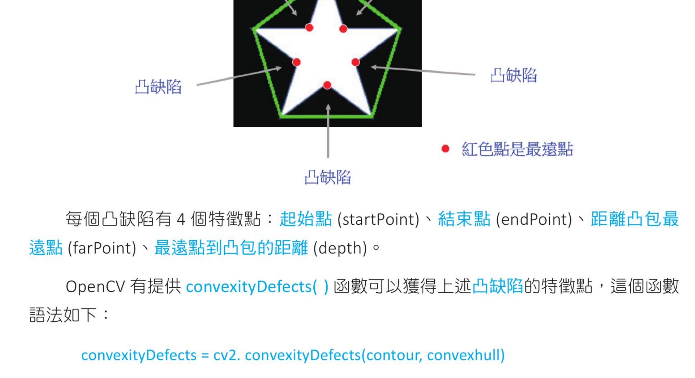
影像画面与 ch16_16.py 相同，输出改为位置关系，参考原书第 16-24 页。
1. 更改 ch16_2.py，不使用 rectangle() 函数建立最小矩形框，改为使用 Numpy 模块自行建立影像图，然后绘制最小矩形框。
2. 使用 explode4.jpg，参考 ch16_8.py 绘制最小三角形包围，但必须使用 for 循环将三角形用红色线条连接。
3. 使用 hand3.jpg，绘制凸包，同时列出所有轮廓的缺陷数量和凸缺陷。
4. 使用 mutstars.jpg，绘制凸包，同时列出所有轮廓的缺陷数量和凸缺陷。
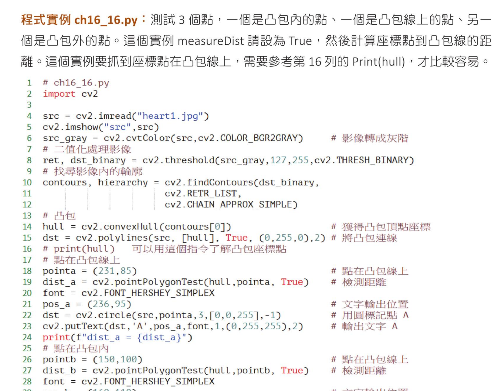
习题 3 的手势凸缺陷参考结果，参考原书第 16-24 页。
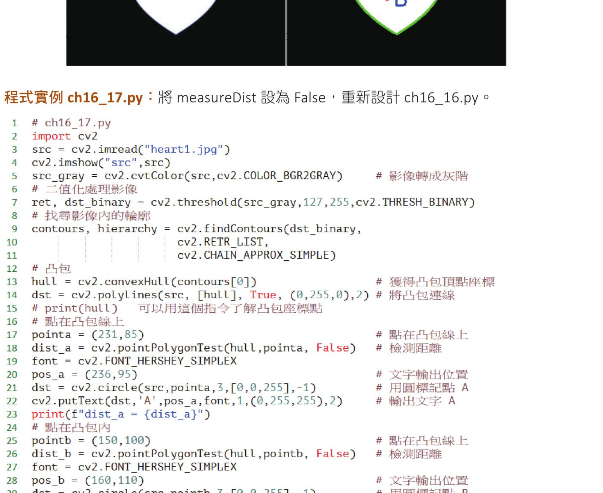
习题 4 的多星形凸缺陷参考结果，参考原书第 16-24 页。